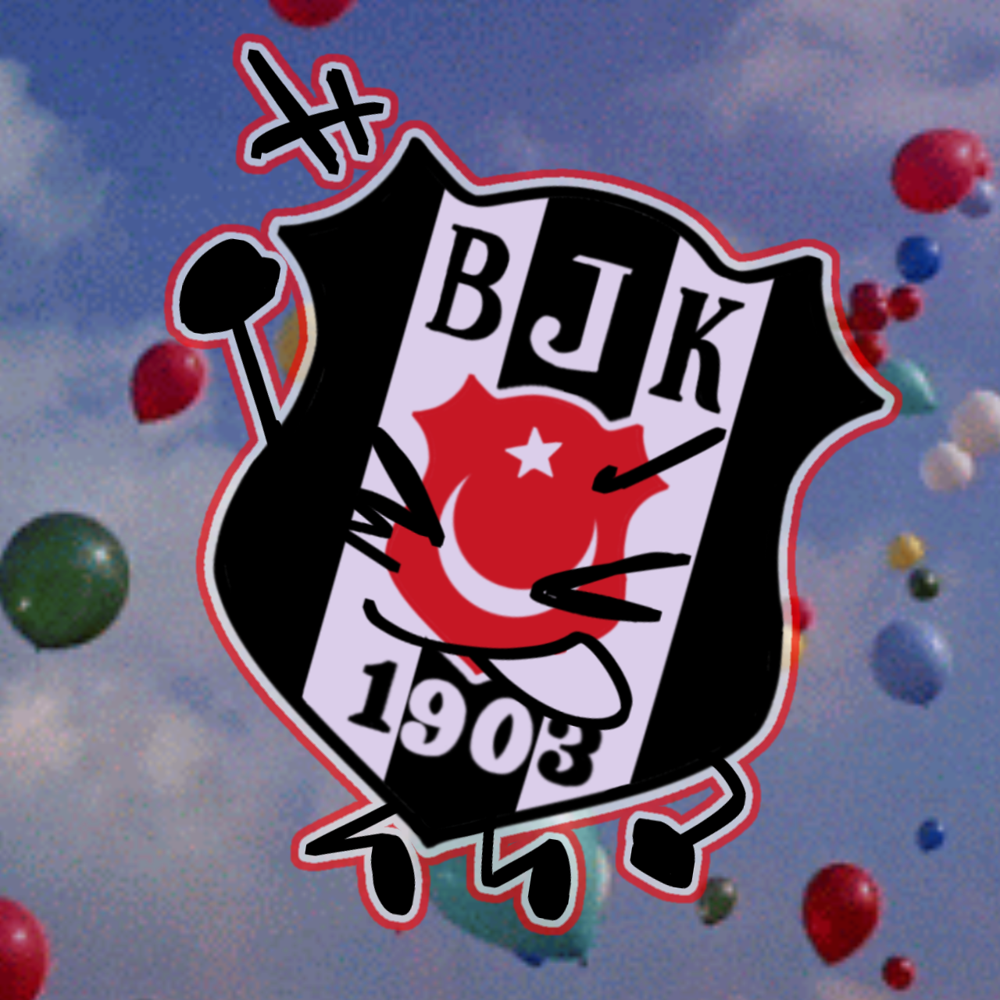

Description for SPOILER_Untitled1072_20240928221606.png
Here's a description of the image:
Overall:
The image depicts a stylized, cartoonish version of the Beşiktaş J.K. (a Turkish sports club) logo against a background of a bright blue sky filled with colorful balloons. The logo is anthropomorphized, meaning it has been given human-like features.
Logo Elements:
• Shape: The logo retains the traditional shield shape of the Beşiktaş logo, but it's outlined with a thick red line.
• Colors: The colors of the logo are black, white, and red, consistent with the club's colors. The Turkish flag emblem (crescent moon and star) is prominently featured in the center in red and white.
• Text: The letters "BJK" and the founding year "1903" are present, arranged similarly to the real logo.
• Anthropomorphism: The logo has been given arms, legs, and a face. The arms and legs appear to be drawn in a simple cartoon style. The face has simple eyes and a mouth, giving it a friendly expression.
Background:
• The background is a bright blue sky with a few scattered clouds.
• There are numerous balloons of various colors floating in the sky, adding to the playful and whimsical feel of the image.
Overall Impression:
The image creates a fun and lighthearted take on the Beşiktaş J.K. logo. The addition of cartoonish features makes it appealing and approachable. The balloon-filled background adds a sense of celebration or festivity.
